空間盤點總冊與命名
用 Codex 把平面圖的空間編號、現有用途、命名提案與需求文件對齊，再把配置圖、設備表和備忘錄編入總冊。讀者可以按空間追到成果，也能辨識哪些名稱仍待討論。
已有總冊、網站及 40 項命名討論表；名稱待定
- 空間章節
- 10 章
- 需求表
- 113 項
- 收錄圖像
- 78 張
從教學與使用需求出發，盤點空間、設備、配置與搬遷安排。
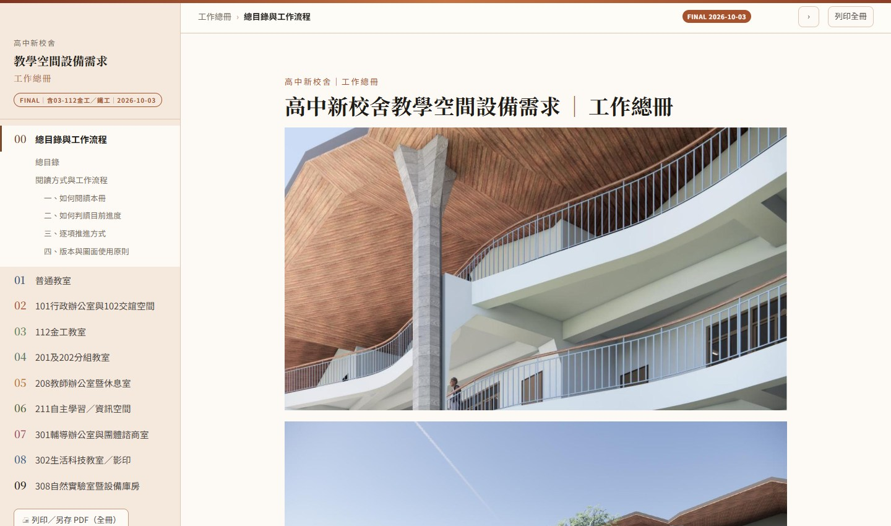
從訪談、圖面、照片與影片口述出發，逐項看我如何用 Codex 整理成可核對的成果。各項附工作總冊對應章節或清冊。
用 Codex 把平面圖的空間編號、現有用途、命名提案與需求文件對齊，再把配置圖、設備表和備忘錄編入總冊。讀者可以按空間追到成果，也能辨識哪些名稱仍待討論。
已有總冊、網站及 40 項命名討論表；名稱待定
把普通教室訪談中的授課、分組與收折情境交給 Codex 整理，再對照教室尺度、桌椅包絡、黑板與投影需求，形成配置比較與採購討論資料。候選規格可接續樣品測試及確認。
已有配置與採購計畫版本；採購定案待確認
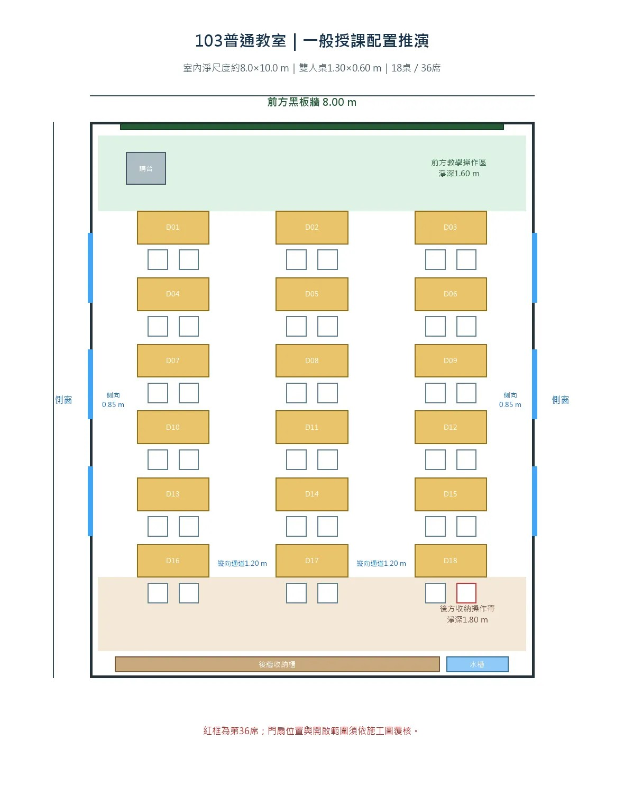
把辦公與服務情境按個人工作、業務收納、公用服務和日常交流分組，再用 Codex 整成需求備忘錄及兩張海報。設計討論可順著桌位、共用檯面和服務區，核對工作與訪客動線。
已有需求、海報及總冊回填
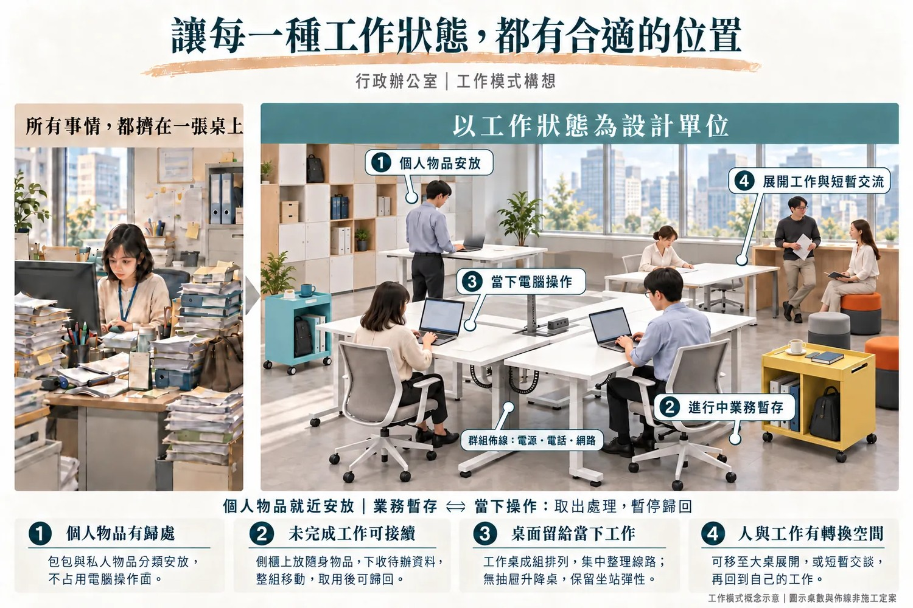
請 Codex 比對 201、202 的使用人數、設備與收納，把共通需求整理為一章，另留 202 的倉庫與套書凹角。兩間教室可沿用同一張設備表討論，並追查各自的配置差異。
已有合併章節、需求備忘與海報
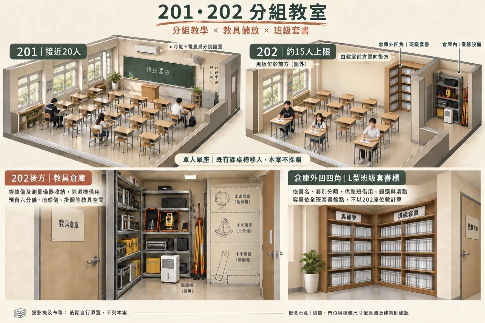
把教師訪談及參考圖整理成備課、短暫休息與非正式交流三種情境。Codex 協助把需求對到座位、區隔和收納，再以圖文備忘及海報呈現 208 的使用方式。
已有需求、海報與發布版本
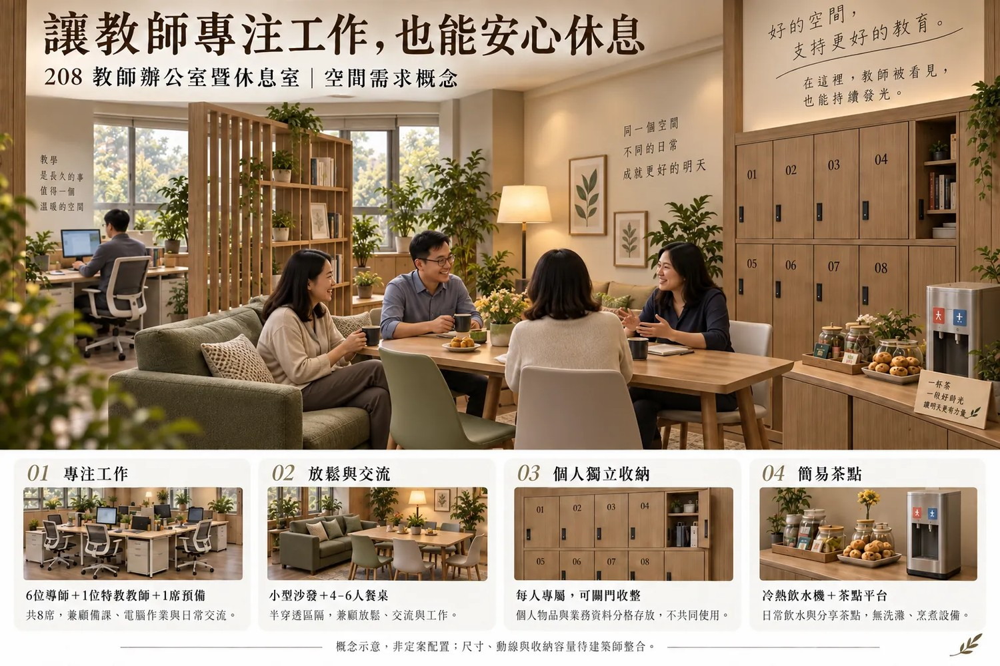
用 Codex 整理學生查詢、安靜閱讀、個人學習與小組協作的情境，把參考圖像轉成可討論的分區及設備條件，形成 211 的圖文備忘與概念海報。
已有圖文備忘、海報及 PDF
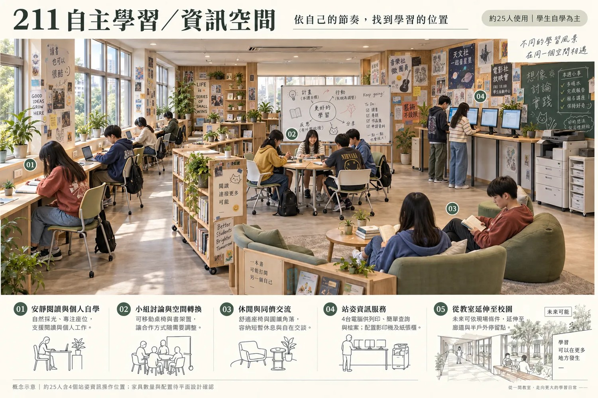
把個別輔導、團體會談與日常辦公的需求交給 Codex 整理，對照隱私、座向與桌面配置，回填設備表、設計要點及海報。討論時可循圖文核對家具位置和會談條件。
已有需求、海報與總冊核對
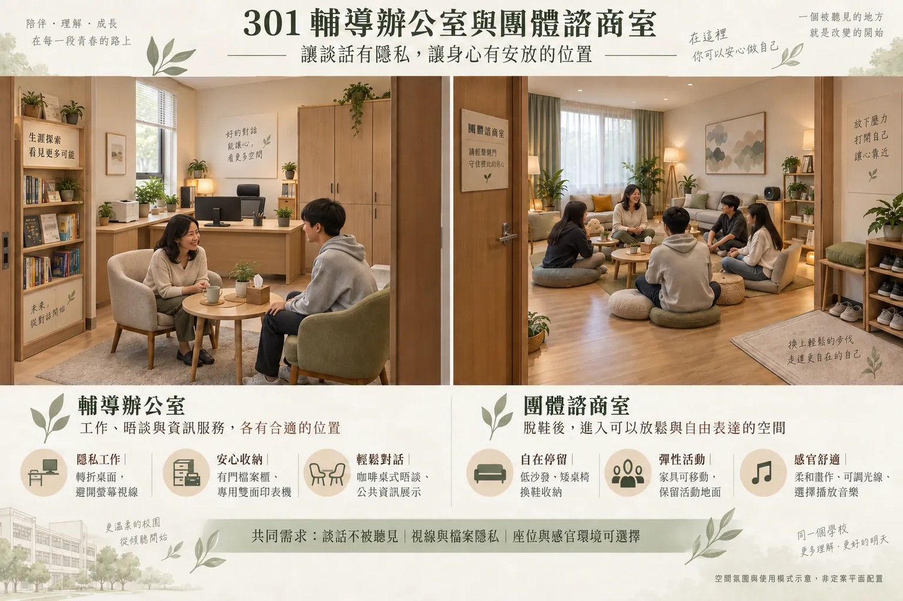
由訪談紀錄和前版配置找出工作平台、中央桌椅與出入口的修正點，再用 Codex 同步整理設備位置、備忘錄與修正版海報，供後續核對操作及通行空間。
已有修正版與發布快照
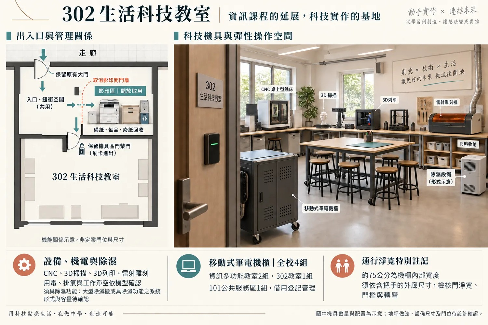
用 Codex 將教師訪談和教學情境拆成實驗桌、水槽、座位及備品收納等條件，回到 307／308 平面圖核對兩室分工。總冊並列兩種實驗桌方向，方便比較走道與使用條件。
已有圖面、海報及網頁；Google 文件同步另待確認
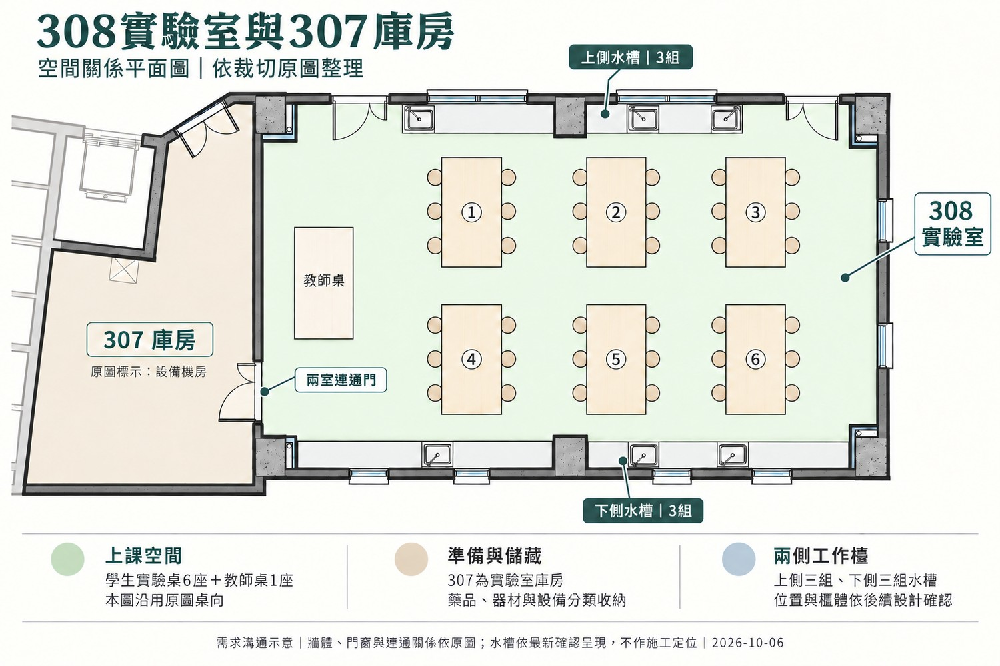
把平面圖、教學操作與既有設備交給 Codex 分區編號，整理成室內金工及半戶外鐵工的設備表與海報。總冊可對照敲打、熱處理與酸洗冷卻的短距離動線，接續核對設計條件。
已有需求、海報、獨立網站及總冊回填
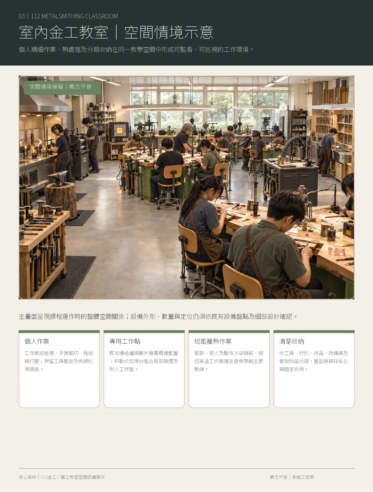
用 Codex 對照兩間教室的平面、櫃體與教學桌需求，把材料、人工、運送及工作坊逐項歸類。總冊將櫃體概算和教學用木工桌預算分列，讓勸募討論可追到各項估算依據。
預算階段已歸檔；已併入網頁審閱版
請 Codex 按日期與工序對齊工作筆記、照片和影片，將分散的紀錄整理成可連續閱讀的日誌。從總冊可看到兩種桌型的工序摘錄，也可循章內入口閱讀完整日誌。
網站與日誌已歸檔；私人儲存庫已推送
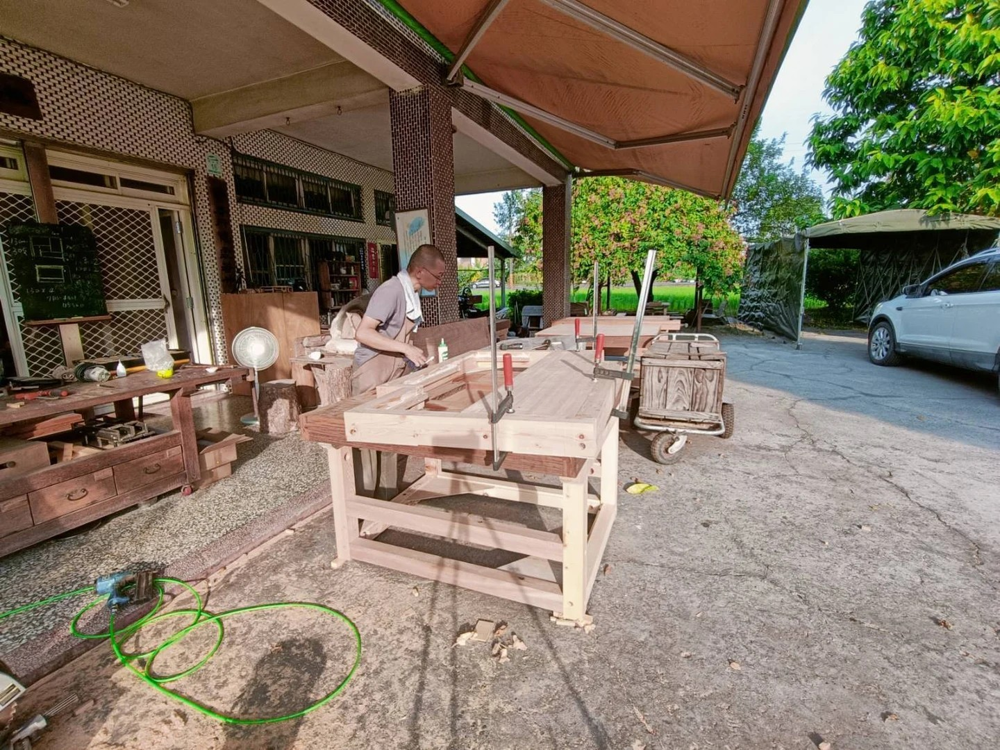
將搬遷影片中的口述交給 Codex，按空間轉錄成可更正的物品清冊，再分開出庫項目與其他狀態。承辦人可用清冊逐室盤點，車次先作粗估，重量、保護方式與實際批次接續核對。
清冊及雲端版本已完成；車次為估算，重量與保護方式待核